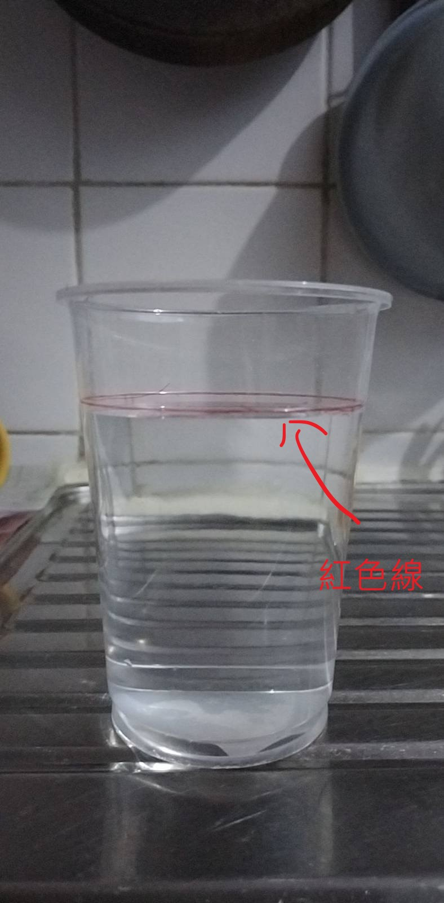
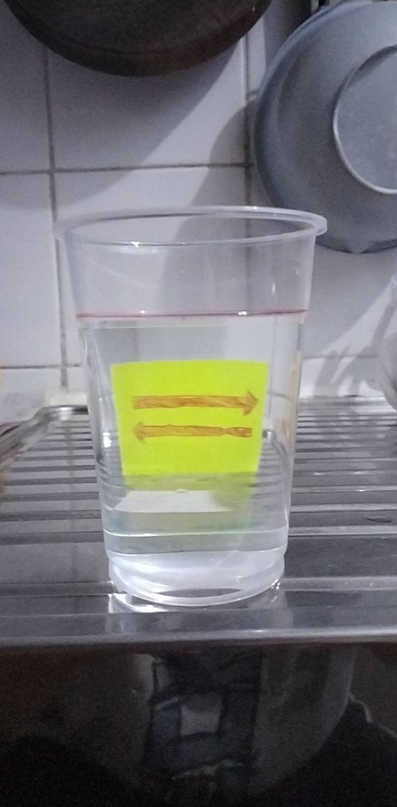
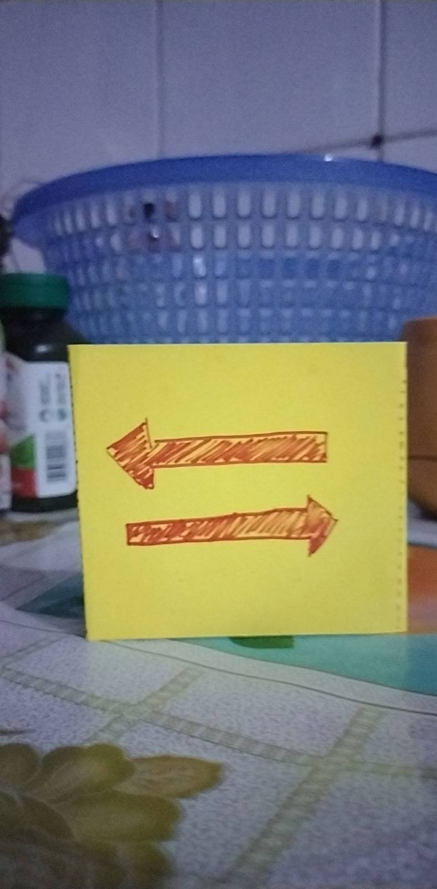
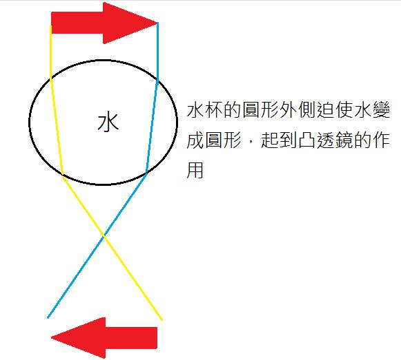

部份1: 準備所需材料
你需要的材料是:
- 一支水
- 紙
- 水杯
- 筆
- 間尺

圖片1
光的反射
部份1: 準備所需材料
你需要的材料是:
圖片1
部份2: 實驗
步驟1.1: 把水倒進水杯裏
影片1
步驟1.2: 把水倒至水杯的紅色線的高度
圖片2
步驟2.1: 把間尺打直地放在水杯的後方
影片2
步驟2.2: 把水杯和間尺拼在一起
影片3
步驟2.3: 把紙沿著紅色虛線向後摺
影片4
步驟2.4: 把紙站立地放在間尺的後方
影片5
步驟2.5: 把紙的黃色面向自己/水杯
影片6
步驟2.5: 把紙和間尺拼在一起
影片7
步驟3.1: 調整自己身體的位置，使身體、水杯、間尺和紙成一直線
影片8
步驟3.2: 令你看向與水面成一直線，透過水杯看箭頭
影片9
圖片3
步驟4.1: 不透過水杯看箭頭
圖片4
部份3: 實驗結果
箭咀方向調轉!
左 -> 右
右 -> 左
部份4: 解釋
我們為何能夠看到東西?

圖片5: 光線被箭咀反射到人眼之中並被人眼捕捉
什麼情況光線會改變方向?
為什麼箭咀方向調轉?
圖片6
圖片7
部份5: 延伸活動
斷鉛筆錯覺
步驟1.1: 把水倒進水杯裏
步驟1.2: 把水倒至水杯的紅色線的高度
步驟2: 把筆放進水杯裏
步驟3: 令你看向與水面成一直線，透過水杯看筆